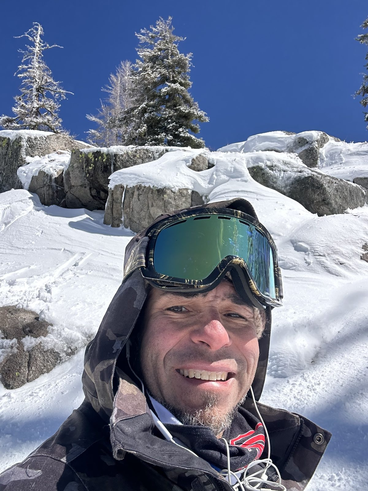

The throughline
This is not a random sequence of pivots. Greg sees the system, understands the people inside it, connects disciplines, and makes the next move practical. Twenty years, one skill.
About
Greg has worked across education, coaching, technology, events, entrepreneurship, strategy, and place. The fields change. The pattern stays consistent.
This is not a random sequence of pivots. Greg sees the system, understands the people inside it, connects disciplines, and makes the next move practical. Twenty years, one skill.
A B.A. in Interactive Multimedia and a Master of Arts in Teaching (both with Honors), a STEAM program adopted across TechShop locations nationwide, and AI-literacy teaching today all point to one question: how do people learn, adapt, and make better decisions with better tools?
Two U.S. patents for resonance-based audio and a decade of live production built technical fluency and calm under pressure — from a sold-out 250-person production to supporting corporate shows for the world's leading technology companies.
Castellanos Coaching, consulting, creative direction, and Common Ground Works sit under one umbrella because they all involve people, environments, and decisions that need to become usable.
Recognition
Education & credentials
Beyond the work
Greg lives and works between the Bay Area and Sonoma County. Snowboarding, radio, music, and time outdoors keep the ideas moving as much as the work does — and keep the practice grounded in real life.

In their words
Real words from Castellanos Coaching clients. Nothing here is invented, and testimonials are shared only with permission.
“Greg helped me stop overthinking and actually take steps. We worked on school, jobs, track, and planning my future in a way that felt real.”
“Greg actually listened to what I wanted. He helped me think about school, work, and real-life stuff without making me feel talked down to.”
“Greg helps me work on being more independent. I have a real job now, I go to concerts, and I'm learning how to handle more things on my own.”
“Greg helped me get organized and start doing things instead of avoiding them. He made everything feel less overwhelming.”
Speaking & teaching
Contact
Coaching, strategy, brand, technology, events, teaching, and place work are all welcome. Start with a simple note.